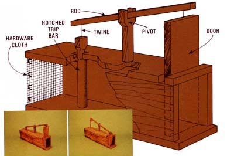

Years ago - when my grandfather used to trap possums, coons and rabbits and then serve 'em up as country dinners - he always caught the varmints in a simple box trap made from little more than a few boards and maybe a handful of nails.
It was only natural then - after rabbits started pulling heavy raids on my garden a few summers back - for me to think once again of Granddad's straightforward and uncomplicated box trap. I knew that [1] I could whip several of the bunny catchers together from scrap materials in no time flat, [2] experience had shown me they'd certainly do the job, and [3] the traps would catch the marauding rabbits without harming them - leaving me the choice of putting the animals on the table, or simply releasing them again somewhere so far away they'd never bother my vegetables again.
The trap you see here is essentially a hollow box about 2 feet long. The four main boards are 1-by-6's (which run only about 3/4-inch thick and 5 1/2 inches wide these days) nailed together with the top and bottom boards overlapping the two sides. This makes the box's inside dimensions measure out about 4 inches wide by 5 1/2 inches tall, just right for a rabbit. Use longer and wider boards if you're going after larger animals, but do try to keep your traps a fairly good fit for whatever you want to catch (so the coons or whatever can't squeeze past the trigger once they're inside).
The principle of the triggering mechanism is very simple: The center post is nothing but a pivot for the long rod across the top, which is connected with old binder twine to a raisable door on one end and a trip bar on the other. The bar fits loosely (very loosely - you don't want it to bind) through a hole in the box's top and is notched (as shown in diagram) to catch on the underside of that hole. Once set in this manner, the weight of the door (which is heavier than the trip bar) will hold the notched stick in place, until a curious rabbit enters the trap and nudges against the trigger, thereby disengaging it and allowing the door to fall.
Since varmints are much more likely to enter hollow logs, etc., that they can see all the way through, the back end of the box is covered with strong, open-mesh hardware cloth. Whatever animal you're trying to catch is further enticed into the trap by baiting the trip bar with a food or scent that the species is known to like. In the case of rabbits, anything from carrots and lettuce to rabbit pellets or good clover hay seems to work.
A few last hints: Make sure your trip bar is positioned with the notch facing forward (so the rabbit will disengage it when he bumps into the stick), and cut the trigger long enough that it clears the bottom of the trap by no more than an inch (you don't want the rabbit to crawl under the bar and miss it entirely). You'll also find the trap works best if you put it outside to "weather" away most of its human smell for a few weeks after you build it and before you set it (while wearing gloves) for the very first time.
|
 MOTHER EARTH NEWS EDITORS This DIY trap is a simple, humane way to protect your garden from hungry wildlife. |
|
|